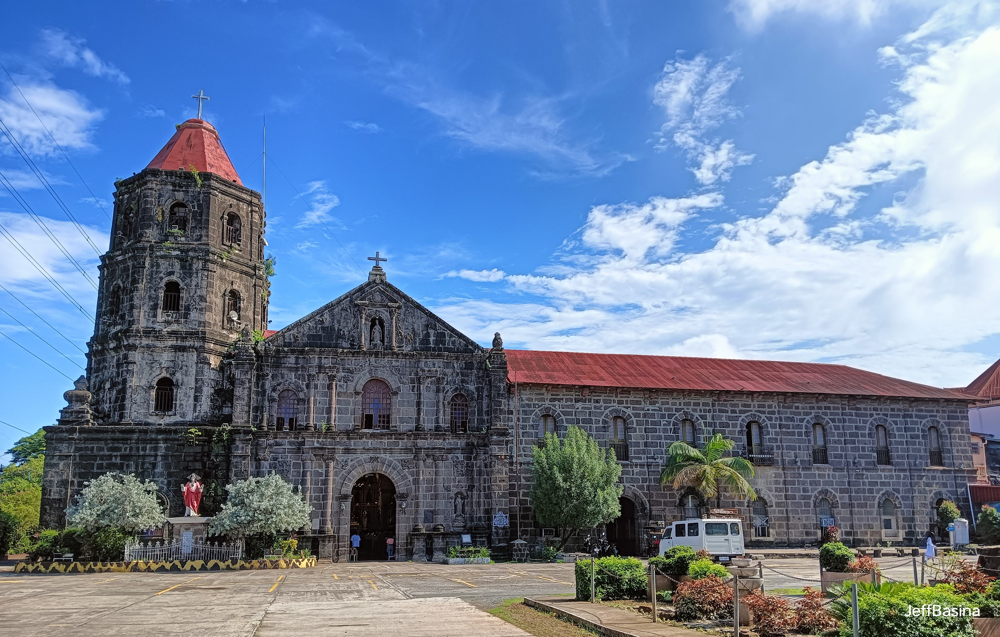
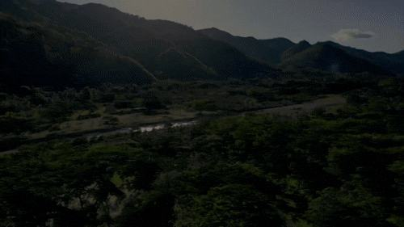

TOP DESTINATION
DARANAK FALLS
“The Tanay rizal’s Popular Waterfall”
Daranak Falls is a waterfall located in the municipality of Tanay. It is one of the most popular tourist attractions in the province of Rizal, Philippines.
VIEW DESTINATION ●
●
WELCOME TO TANAY, RIZAL
Step Into Tanay, Tanay, Rizal is a first-class municipality located about 50 to 57 kilometers east of Manila in the CALABARZON region of the Philippines, We invite you to explore the heritage,serenity, and spirit of our home, Discover the wonder that stays with you.
START YOUR JOURNEYEXPLORE THE BEAUTY OF TANAY
Discover the wonders of Tanay, Rizal.
TOP DESTINATION
“The Tanay rizal’s Popular Waterfall”
Daranak Falls is a waterfall located in the municipality of Tanay. It is one of the most popular tourist attractions in the province of Rizal, Philippines.
VIEW DESTINATION
TOP DESTINATION · CULTURE
“Perfect way to disconnect and appreciate god’s creation.”
RICA is a 13.5 hectare sacred space on top of the Sierra Madre Mountain. It has the 71 feet Mama Mary Regina Rosarii, a big chapel, restaurants, picnic areas, a Retreat Center and an ecological sanctuary.
VIEW DESTINATION
TOP DESTINATION · MOUNTAIN
“Catching the sea of clouds at Mount.”
Mt. Daraitan is a great sampler for hiking up the relatively unexplored Sierra Madre mountains, and along with the other attractions in Daraitan.
VIEW DESTINATION
TOP DESTINATION · CHURCH
“A historical Church with an active parish community.”
San Ildefonso de Toledo Parish Church, commonly known as Tanay Church, is a Roman Catholic church located in the town of Tanay, Rizal in the Philippines.
VIEW DESTINATION
THE EXPERIENCE
The festival highlights the town's eco-tourism, your trip naturally pairs with exploring Tanay's spectacular year-round natural assets. You can hit the festival in the town plaza during the day and easily take side-trips to go trail running, chase waterfalls at Daranak Falls, or camp out at the sea of clouds in the Sierra Madre mountain ridges.

Discover the wide, open skies that turn Tanay into a paradise at sunrise and sunset, where golden light spills over the peaks and paints the clouds in soft shades of pink, orange, and lavender.